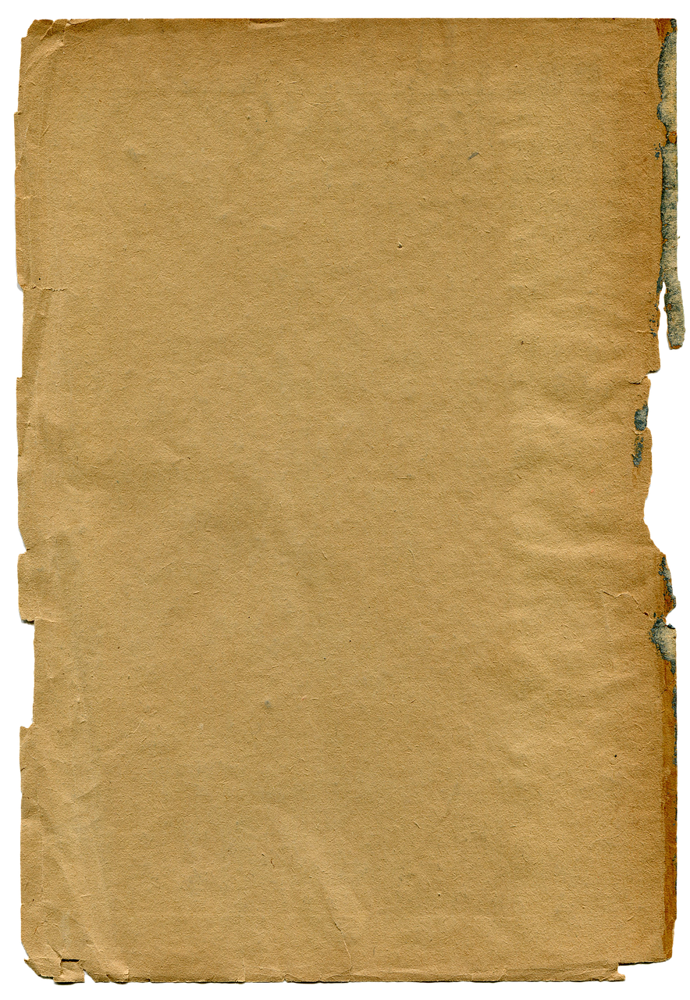
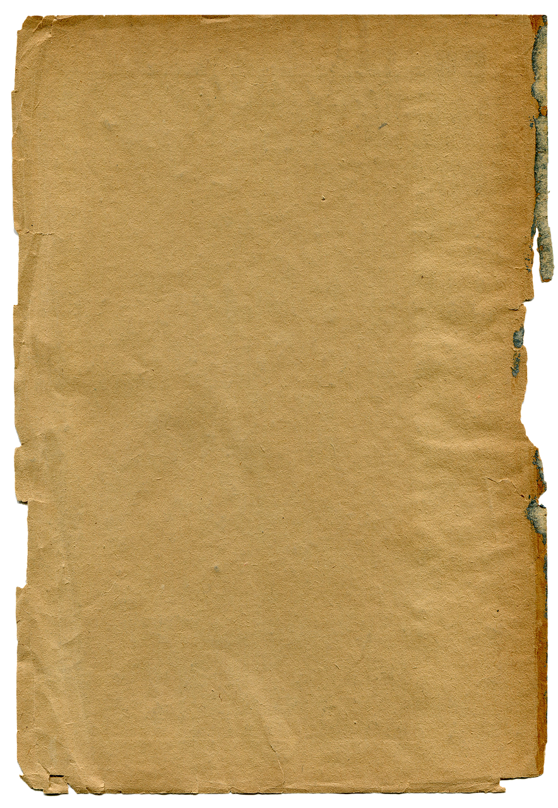

The Global Antiquity Society (GAS) is a collective intelligence network on a mission to rebuild genuine trust among people. We look back to a time when communities grew naturally and everyone knew each other—when life was about real connections, and extended families supported each other under one roof, no insurance policies or glossy marketing needed.
Globalization has scattered us—some of us left in search of opportunity, others driven by power or greed, and some simply disillusioned. As a result, our families and communities feel more fragmented than ever. But all is not lost. At GAS, we’re about rediscovering that raw, unfiltered sense of unity: hanging out, sharing ideas, helping out, having fun, and forging genuine bonds.
Join us in reviving the timeless spirit of connection and rediscover what it’s like to live on your own terms.
Set Sail With Our Crew!
Ready to take the next step? Join Delray Beach’s very own GAS (Global Antiquity
Society) Discord—a crew of free-thinkers mining the past to craft an inspiring future.
Come aboard and discover upcoming workshops, events, and more as we chart a new course together!
Thinking of starting your own GAS crew? We’d love to hear about it. Share your name, email, and a quick note about your vision—whether it’s building a community garden, launching a makerspace, or starting any initiative that brings people together. Let’s chart your course together.
Step away from the static. Embrace the adventure—and help shape a future built on authenticity and shared learning!
Find events and meetups happening near you.